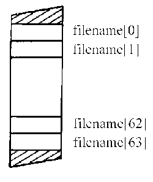
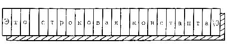
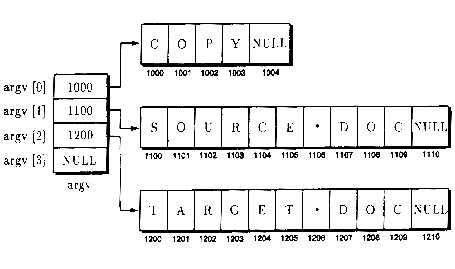

Символьные строки хранят такую информацию, как имена файлов, названия книг, имена служащих и другие символьные сочетания. Большинство программ на C++ широко используют символьные строки. Далее вы узнаете, что в C++ символьные строки хранятся в массиве типа char, который заканчивается символом NULL (или ASCII 0). В данном уроке символьные строки рассматриваются более подробно. Вы узнаете, как хранить и обрабатывать символьные строки, а также как использовать функции библиотеки этапа выполнения, которые манипулируют символьными строками. К концу этого урока вы освоите следующие основные концепции:
Программы на C++ хранят символьные строки как массив типа char. Большинство программ широко используют символьные строки. Экспериментируйте с каждой программой, представленной в этом уроке, чтобы освоиться с символьными строками. Вы обнаружите, что работа с символьными строками подобна работе с массивами, описанной в уроке 16.
Программисты на C++ широко используют символьные строки для хранения имен пользователей, имен файлов и другой символьной информации.
Для объявления символьной строки внутри программы просто объявите массив типа char с количеством элементов, достаточным для хранения требуемых символов. Например, следующее объявление создает переменную символьной строки с именем filename, способную хранить 64 символа (не забывайте, что символ NULL является одним из этих 64 символов):
char filename[64];
Как видно из рис. 17.1, это объявление создает массив с элементами, индексируемыми от filename[0] до filename[63].

Рис. 17.1. C++ трактует символьную строку как массив типа char.
Главное различие между символьными строками и другими типами массивов заключается в том, как C++ указывает последний элемент массива, Как вы уже знаете, программы на C++ представляют конец символьной строки с помощью символа NULL, который в C++ изображается как специальный символ '\0'. Когда вы присваиваете символы символьной строке, вы должны поместить символ NULL ('\0') после последнего символа в строке. Например, следующая программа ALPHABET. CPP присваивает буквы от А до Я переменной alphabet, используя цикл for. Затем программа добавляет символ NULL в эту переменную и выводит ее с помощью cout.
#include <iostream.h>
void main(void)
{
char alphabet [34]; // 33 буквы плюс NULL char letter;
int index;
for (letter = 'A', index = 0; letter <= 'Я';
letter++, index++) alphabet[index] = letter;
alphabet[index] = NULL;
cout << "Буквы " << alphabet;
}
Как видите, программа присваивает строке символ NULL, чтобы указать последний символ строки:
alphabet[index] = NULL;
Когда выходной поток cout выводит символьную строку, он по одному выводит символы строки, пока не встретит символ NULL. Короче говоря, cимвол NULL указывает программе последний символ в строке.
Обратите внимание на цикл for, который появляется в предыдущей программе. Как видите, цикл инициализирует и увеличивает две переменные (letter и index). Когда цикл for инициализирует или увеличивает несколько переменных, разделяйте операции запятой (запятая тоже является оператором C++):
for (letter = 'A', index = 0; letter <= 'Я'; letter++, index++)
Все созданные вами программы использовали символьные строковые константы, заключенные внутри двойных кавычек, как показано ниже:
"Это строковая константа"
При создании символьной строковой константы компилятор C++ автоматически добавляет символ NULL, как показано на рис. 17.2.

Рис. 17.2. Компилятор C++ автоматически добавляет символ NULL к строковым константам.
Когда ваши программы выводят символьные строковые константы с помощью выходного потока cout, cout использует символ NULL (который компилятор добавляет к строке) для определения последнего символа вывода.
Использование символа NULL
Символьная строка представляет собой массив символов, за которыми следует символ NULL ('\0'). При объявлении символьной строки вы объявляете массив типа char. Когда программа позднее присваивает символы строке, она отвечает за добавление символа NULL, который представляет конец строки.
Если вы используете строковые константы, заключенные в двойные кавычки, компилятор C++ автоматически добавляет символ NULL. Большинство функций C++ используют символ NULL для определения последнего символа строки.
Следующая программа LOOPNULL.CPP слегка изменяет предыдущую программу, используя цикл for для вывода содержимого строки:
#include <iostream.h>
void main(void)
{
char alphabet[34]; //33 символа плюс NULL char letter;
int index;
for (letter = 'A', index = 0; letter <= 'Я'; letter++,index++) alphabet[index] = letter;
alphabet[index] = NULL;
for (index = 0; alphabet[index] 1= NULL; index++) cout << alphabet[index];
cout << endl;
}
Как видите, цикл for по одному исследует символы строки. Если символ не NULL (не последний символ строки), цикл выводит символ, увеличивает индекс, и процесс продолжается.
При рассмотрении программ на C++ вы можете встретить символы, заключенные в одинарные кавычки (например, 'А') и символы, заключенные в

Рис. 17.3. Как компилятор C++ хранит символьную константу 'А' и строковую константу "А".
двойные кавычки ("А"). Символ внутри одинарных кавычек представляет собой символьную константу. Компилятор C++ выделяет только один байт памяти для хранения символьной константы. Однако символ в двойных кавычках представляет собой строковую константу — указанный символ и символ NULL (добавляемый компилятором). Таким образом, компилятор будет выделять два байта для символьной строки. Рисунок 17.3 иллюстрирует, как компилятор C++ хранит символьную константу 'А' и строковую константу "А".
Как вы уже знаете из урока 16, C++ позволяет вам инициализировать массивы при объявлении. Символьные строки C++ не являются исключением. Для инициализации символьной строки при объявлении укажите требуемую строку внутри двойных кавычек, как показано ниже:
char title[64] = "Учимся программировать на языке C++";
Если количество символов, присваиваемое строке, меньше размера массива, большинство компиляторов C++ будут присваивать символы NULL остающимся элементам строкового массива. Как и в случае с массивами других типов, если вы не указываете размер массива, который инициализируете при объявлении, компилятор C++ распределит достаточно памяти для размещения указанных букв и символа NULL:
char title[] = "Учимся программировать на языке C++";
Следующая программа INIT_STR.CPP инициализирует символьную строку при объявлении:
#include <iostream.h>
void main(void)
{
char title[64] = "Учимся программировать на языке C++";
char lesson[64] = "Символьные строки";
cout << "Книга: " << title << endl;
cout << "Урок: " << lesson << endl;
}
Некоторые программы, представленные в оставшейся части книги, будут инициализировать символьные строки подобным способом. Найдите время для эксперимента с этой программой, изменяя символы, присваиваемые каждой строке.
Передача символьной строки в функцию подобна передаче любого массива в качестве параметра. Внутри функции вам нужно просто указать тип массива (char) и левую и правую скобки массива. Вам не надо указывать размер строки. Например, следующая программа SHOW_STR.CPP использует функцию show_string для вывода символьной строки на экран:
#include <iostream.h>
void show_string(char string[])
{
cout << string << endl;
}void main(void)
{
show_string("Привет, C++!");
show_string("Учусь программировать на C++");
}
Как видите, функция show_string трактует параметр символьной строки как массив:
void show_string(char string[])
Так как символ NULL указывает конец строки, функция не требует параметр, который задает количество элементов в массиве. Вместо этого функция может определить последний элемент, просто найдя в массиве символ NULL.
Как вы уже знаете, функции C++ часто используют символ NULL для определения конца строки. Следующая программа STR_LEN.CPP создает функцию с именем string_length, которая ищет символ NULL в строке для определения количества символов, содержащихся в строке. Далее функция использует оператор return для возврата длины строки вызвавшей функции. Программа передает несколько различных символьных строк в функцию, отображая длину каждой из них на экране:
#include <iostream.h>
int string_length(char string[])
{
int i;
for (i = 0; string[] != '\0'; i++); // Ничего не делать, но перейти к
// следующему символу return(i); Длина строки
}void main(void)
{
char title[] = "Учимся программировать на языке C++";
char lesson[] = "Символьные строки";
cout << "Строка " << title << " содержит " << string_length(title) << " символов" << endl;
cout << "Строка " << lesson << " содержит " << string_length(lesson) << " символов" << endl;
}
Как видите, функция запускается с первого символа строки (элемент 0) и затем исследует каждый элемент до тех пор, пока не встретит NULL. Рассматривая программы на C++, вы встретите целый ряд функций, которые подобным образом просматривают символьные строки в поисках символа NULL.
Как вы уже знаете, символ NULL представляет собой символ ASCII 0. В уроке 7 вы изучали, что C++ использует значение 0, чтобы представлять ложь. Таким образом, поскольку символ NULL равен 0, ваши программы могут упростить многие операции цикла. Например, многие функции просматривают символьные строки символ за символом в поиске NULL. Следующий цикл for иллюстрирует, как программа может искать NULL в строке:
for (index = 0; string[index] != NULL; index++)
Поскольку символ NULL равен 0, многие программы упрощают циклы, которые ищут NULL, как показано ниже:
for (index = 0; string[index]; index++);
В данном случае пока символ, содержащийся в string[index] не NULL (0 или ложь), цикл продолжается.
Из урока 11 вы узнали, что большинство компиляторов C++ обеспечивает обширный набор функций, называемых библиотекой этапа выполнения. Рассматривая библиотеку этапа выполнения, вы обнаружите, что она содержат много разных функций, манипулирующих строками. Например, функция strupr преобразует символьную строку в строку верхнего регистра. Подобно этому, функция strlen возвращает количество символов в строке. Большинство библиотек этапа выполнения обеспечивают даже функции, которые позволяют вам просматривать строки в поисках определенного символа. Например, следующая программа STRUPR.CPP иллюстрирует использование функций strupr и strlwr библиотеки этапа выполнения:
#include <iostream.h>
#include <string.h> // Содержит прототипы
// функций strupr и strlwrvoid main(void)
{
char title[] = "Учимся программировать на языке C++";
char lesson[] = "Символьные строки";
cout << "Верхний регистр: " << strupr(title) << endl;
cout << "Нижний регистр: " << strlwr(lesson) << endl;
}
Использование библиотечных функций, манипулирующих строками может сохранить вам время, требуемое для программирования. Выберите время напечатать копию заголовочного файла STRING.H для определения функций манипулирования строками, которые поддерживаются библиотекой вашего компилятора.
Вы должны играть по правилам
Как вы уже знаете, большинство функций, которые манипулируют строками, полагаются на символ NULL как на конец строки. Если ваши программы присваивают строки символам, то следует убедиться, что они добавляют символ NULL в качестве последнего символа строки. Если ваши программы не используют NULL соответствующим образом, то функции, которые полагаются на символ NULL, будут сбиваться.
ЧТО ВАМ НЕОБХОДИМО ЗНАТЬ
Большинство программ на C++ широко использует символьные строки. Из этого урока вы узнали, как работать со строками. Из урока 18 вы узнаете, как сохранять связанную информацию различных типов в переменных, представляющих структуры C++. Используя структуру, вы можете хранить всю информацию о служащем, например его фамилию, возраст, оклад и номер телефона, в одной переменной. Однако, прежде чем приступить к уроку 18, убедитесь, что освоили следующие основные концепции:
- Символьная строка представляет собой массив символов, завершающийся 0 (символом NULL).
- Вы создаете символьную строку, объявляя массив типа char.
- Ваша программа ответственна за размещение символа NULL за последним символом строки.
- Если программа использует строковые константы, заключенные в
- двойные кавычки, компилятор C++ автоматически добавляет символ NULL.
- C++ позволяет вам инициализировать строки при объявлении, указывая требуемые символы внутри двойных кавычек.
- Большинство компиляторов C++ в своих библиотеках этапа выполнения обеспечивают широкий набор функций для манипулирования строками.
Предыдущий урок | Следующий урок